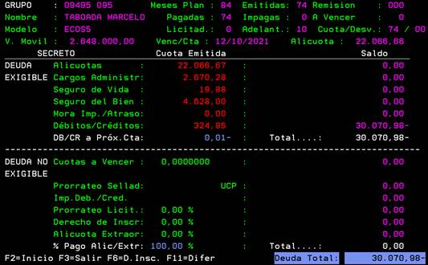
¡Importante! Si el cliente abona duplicada la cuota del mes (ej, ventanilla + débito, ventanilla + vopa) el pago excedente queda a favor de la cuota del mes siguiente y, al momento de generar el cupón, podrá no emitirse o bien emitirlo por la diferencia que exista entre el importe de la cuota del mes y el importe abonado.
Tomando en cuenta el origen del pago (AS400 | CUB | Consulta de recibos, opción 5*) se procederá de la siguiente manera:
Si el pago fue realizado con TDC, TD, DEBIN por VOPA o bien fue realizado por débito automático se tomarán las siguientes situaciones en consideración:
- Incorrecto funcionamiento de VOPA: varios pagos por el mismo importe de la cuota mes realizados el mismo día (se pueden verificar en VOPA Backend, Pagos)
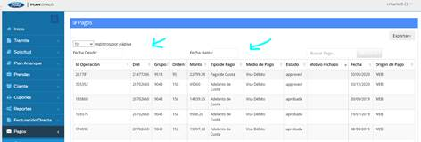
- Errores administrativos internos de POSA y el concesionario
- Errores de información brindada al cliente desde POSA y el concesionario
- Reclamos por desconocimiento de adhesión al plan
Si una de las situaciones se cumpliera, se podrá solicitar la devolución del pago mediante el reclamo:
- DTC016, pagos por débito automático: detallando del pago que desea reversarse fecha, importe y n° de recibo
En este ejemplo, se procesó la baja del débito post vencimiento de cuota
| 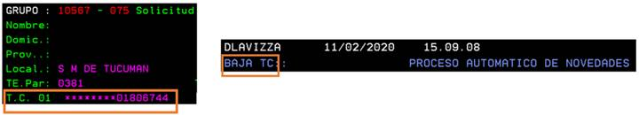 |
- OPAUTO, pagos realizados por VOPA: detallando del pago que desea reversarse fecha, importe y n° de recibo
AS400 | CUB | 37 Consulta de recibos Opción 5 sobre la línea del pago
| 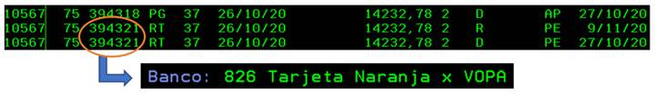 |
El pago se devolverá a la tarjeta para la cual se realizó el pago. Las
reversiones pedido del cliente por reclamo y las recepcionadas por las TDC/TD
se procesan a diario.
El plazo quedará indicado por el área en la respuesta al reclamo, evitar dar fechas aproximadas debido a que dependemos de los procesos de cada TDC/TD.
Cada vez que el cliente solicita una reversión de uno o varios pagos a la tarjeta para impactar dicha devolución efectuada al cliente en su plan la reversión se procesa sobre el ultimo pago efectuado, por ejemplo:
- Si el cliente solicitó la reversión de un pago efectuado en febrero:
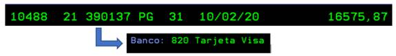
- E ingresaron pagos a posteriori, se reversa el ultimo aplicado y deja aplicada la diferencia que le corresponda entre el pago y lo reversado por la tarjeta
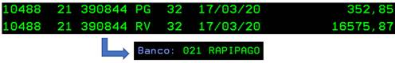
El proceso de reversiones débito automático y pagos online cuenta con 2 instancias que se traducen en códigos de aplicación en la consulta de recibos:
- Paso 1: código RT (reintegro tarjeta)
o Cuando se recibió el pedido de reintegro, fue analizado y enviado a la tarjeta de crédito
o El cliente aún no recibió la acreditación en su liquidación => puede demorar que el cliente lo visualice y esto depende de su TDC/TD
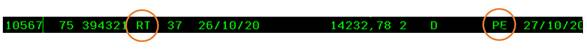
o El pago está reversado en nuestro sistema y a la espera de la confirmación de la TDC/TD; el cliente aún no tiene la devolución en su resumen de tarjeta de crédito por lo que el mensaje que le daremos al cliente será que aguarde hasta tanto recibamos la confirmación de que el importe fue acreditado
- Paso 2: código RV (reversión)
o El movimiento cambia a RV cuando la tarjeta le liquida a POSA la reversión: esta fecha no necesariamente coincide con la acreditación en la cuenta del cliente dado que corren los plazos de acreditación y cierre dependiendo de cada tarjeta; podemos informarle esta fecha como la que la tarjeta confirmó que aprobó la reversión y que deberá aguardar los plazos de acreditación
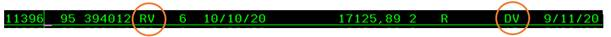
Las reversiones se procesan a diario tomando en cuenta los reclamos recibidos, las devoluciones solicitadas por los clientes a las tarjetas de crédito y enviadas a POSA para su procesamiento
Mensualmente se extrae un reporte del sistema que lista los excedentes clasificados como:
- RA => pago ingresado para plan ya cancelado
- RT => pago ingresado para plan ya cancelado clasificados en RT debido al origen de los mismos, tarjeta
- DJ => excedentes de cuenta corriente (créditos del suscriptor) cuyo recibo corresponde a tarjetas
Dichos pagos o excedentes se analizan a comienzos de cada mes y, de corresponder, se procede a su devolución
Los pagos correspondientes a siniestros de vida se devuelven por transferencia bancaria
Existen 2 tipos de devoluciones posibles:
Corresponde a pagos excedentes que surgieron a posteriori de la cancelación del plan
Para cada tipo de devolución deben cumplirse los siguientes procesos:
- DJ, dados de baja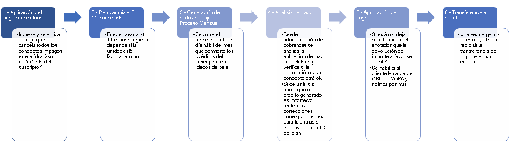
¿Cómo se visualiza en el sistema?
Paso 1
Paso 3
Paso 5
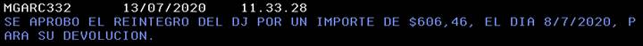
Paso 6
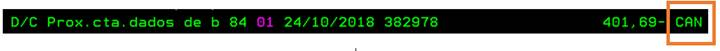
¿Cómo ubicarlos en el sistema?
| 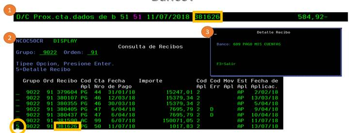 |
AS400 | CUB | 37 Consulta de recibos
- RA, plan cancelado: pagos ingresados luego de que el plan quedó cancelado. Se identifican por el área y “reclasifican” en este inventario para ser devueltos
- RH, rechazo no procesable: son pagos desaplicados y clasificados en este inventario por los analistas de administración de cobranzas. Para verificar si corresponde la devolución, SIEMPRE revisar el anotador. Posibles situaciones que pueden darse para encontrar un pago:
o por corrección de cuenta corriente. Se reclasifican en forma temporal hasta terminar su corrección
o pagos posteriores al siniestro de vida o vehículo. Se encuentran siempre aplicados con posterioridad a un recibo especial (905.000/904.000) con el que se acredita la cancelación por parte de la cia aseguradora en el plan
o derecho de adjudicación por ART. 10. El número de cuota siempre es 11 y no corresponden devolver al cliente. Estos se refieren al derecho de adjudicación en casos de siniestros de vida y no deben ser informados al cliente y se acreditan al concesionario para cubrir este importe al momento del retiro de la unidad
o licitación o alícuota extraordinaria
o reintegros de facturación directa. Siempre el número de cuota será 90
o Recibo de menor valor o bonificación con desfacturación. Ante la desfacturación de la unidad corresponde anular los recibos de menor valor o bonificaciones y no se reintegran al cliente. (Recibo 940.000 o 905.000)
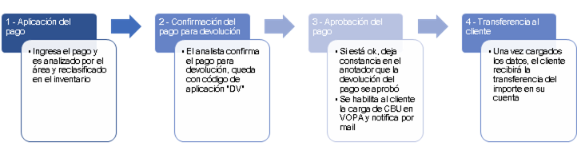
Paso 1
Paso 2
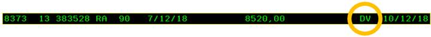
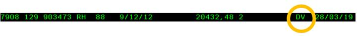
Paso 4
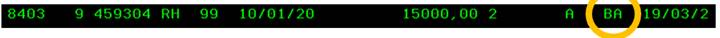
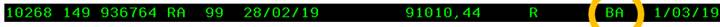
DEV016 pueden cargarse en caso de que:
- El plan esté cancelado, haya pasado fin de mes y aun no contamos con anotación en AS400 informando la aprobación del pago
- Un pago esté reclasificado como RA o RH y con código de aplicación “PE”
En el cuerpo del reclamo indicar fecha de pago, importe y n° de recibo
REETRA puede cargarse una vez que esté la anotación en el sistema de que el pago está aprobado, pasó un lunes y aún no tenemos la anotación del envío de la transferencia
Chequear mail dl cliente para verificar si es correcto. Si el mail es incorrecto y pasó un lunes, ya está habilitado en VOPA para cargar.
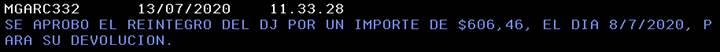
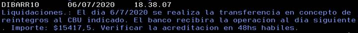